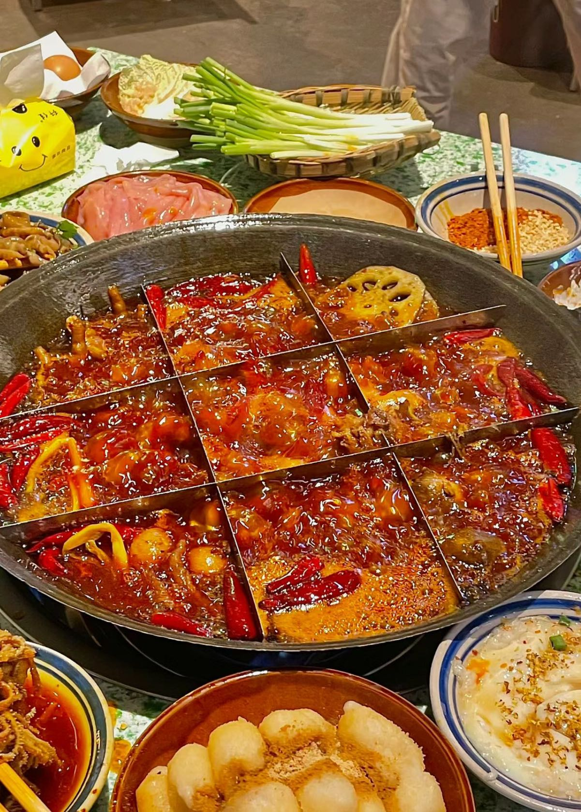

For me, traveling is more than just going to see new landscapes, it's a way to escape the everyday and reconnect with myself.
Before every departure, I imagine with anticipation of the unknown what kind of scenery and stories I will encounter.
I remember once standing on an unfamiliar street in New York City, watching people's hurried footsteps, and suddenly
feeling that I was part of the world, a subtle sense of loneliness and freedom intertwined in a way that was particularly
unforgettable. Traveling always gives me a chance to step out of the usual rhythm of life and think about what I really want.
Whether it's exploring the magnificence of nature or experiencing the charms of different cultures, traveling has taught me
to look at the world with a broader perspective. Every time I come back, I feel stronger and more filled with a vision for
the future. For me, traveling is not only a wandering of the body, but also a cleansing of the soul.
Food and Life
by Haosong Bian

When it comes to food, I always have an irresistible passion. Every time I try a new dish, I feel a small sense of accomplishment,
especially when you realize that a certain dish really hits your taste buds, the satisfaction is simply unparalleled. I like to
taste local specialties in different places, which not only allows me to experience the food culture of each place, but also allows
me to learn more about a place's customs and culture as I eat. For example, the last time I ate spicy hot pot in Sichuan, China,
the spicy experience on the tip of my tongue is still unforgettable. The charm of food lies not only in the flavor, but also in its
ability to pull people together. Whether I'm getting together with friends or enjoying a delicious dinner alone, every encounter with
food makes me feel that life is so much better. Food is, indeed, a way for me to love life.